A tool that provides deep insights into team wellbeing, and AI driven recommendations that drive real cultural change.
Impact
Compass was a driver in key multi-million dollar deals for Unmind – extending our training support for managers, and enabling team-level wellbeing development and growth. Our AI recommendations and chatbot prototype were both very well received – driving engagement including repeat visits and time spent in app.
My role
As senior lead product designer on Compass I worked end-to-end from initial concepts to shipping to testing.
Key responsibilities
- Co-ordinating between product, organisational science, and the design team.
- Working with engineering to make sure the product was as good as it could be within our constraints.
- Facilitating Design Sprints with senior leadership and cross-functional teams.
- Collaborating with user research to test our ideas – in both prototype form and working code.
- Working with our marketing team to create onboarding and sales videos.
Team
This work took place over about 7 months. The team changed and grew as we went on – here’s just a few of the people that I worked with.
Initial Design Sprint
After shipping the Unmind Insights wellbeing platform, our team reached a decision point. Where to next?
To explore the space, prototype ideas, and test them with our clients, I facilitated a design Sprint. I was joined by my core team and key stakeholders from Unmind leadership including co-founder Chief Wellbeing Officer Steve Peralta, and Chief Product Officer Gavin Wade.
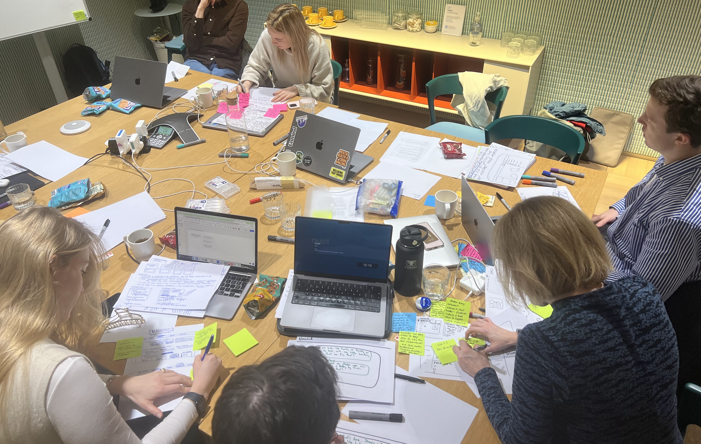
The most exciting idea to emerge from this sprint was a Microsoft Teams plugin to incorporate a well-being check-in into manager <> employee one-to-one meetings.
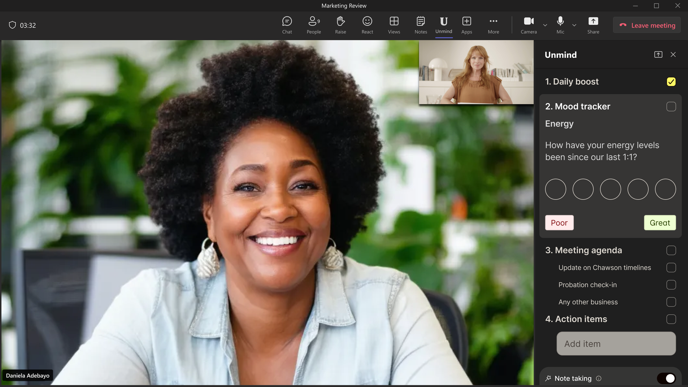
This would then feed into a dashboard, allowing both the manager and the employee to track changes over time, receive a simple summary of the meeting transcript and get AI based recommendations on useful steps to improve wellness.
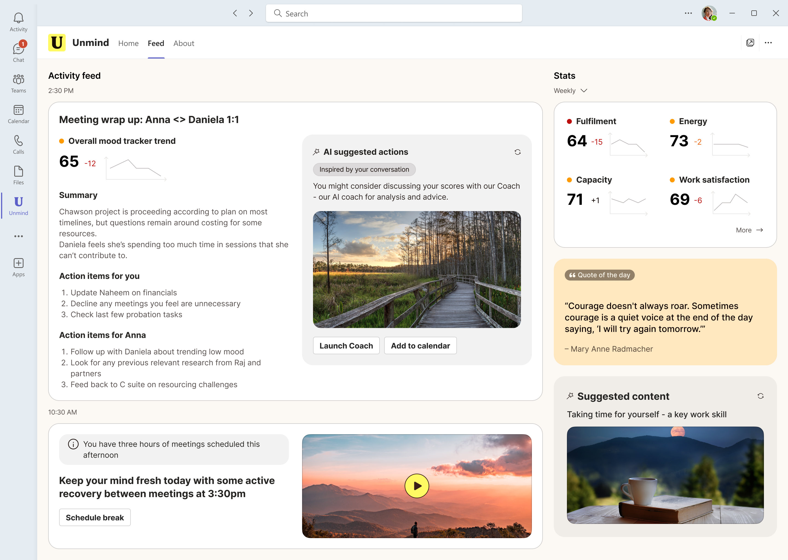
Testing
I took the team from sketches to a working prototype in three days, and on the fourth day we began our tests with clients who fit our ideal customer profile (ICP) – Enterprise companies with over 10,000 employees.
Pivot
We quickly learnt that while our clients loved the concept, it would never fly in their companies – as managers would not feel comfortable holding those conversations. We also learnt that employees would not trust the privacy of the information – and might even suspect that it would be used against them. This led us to pivot to a completely different way of thinking about the problem. How might we better serve managers? We began by talking to them.
User research collaboration
In partnership with user researcher Hannah Johnson, we went deep with managers around the world on their process, wellbeing understanding, and their confidence in supporting team members. We built on our understanding of managers in our ICP and learnt that they:
- Lacked confidence in supporting their employees through difficult times.
- Were time poor
- Didn’t know their company policies on wellbeing, or what help was available.
I don’t even know what wellbeing resources we have – when would I find the time to look for them?
Department manager, Enterprise company with over 60,000 employees.
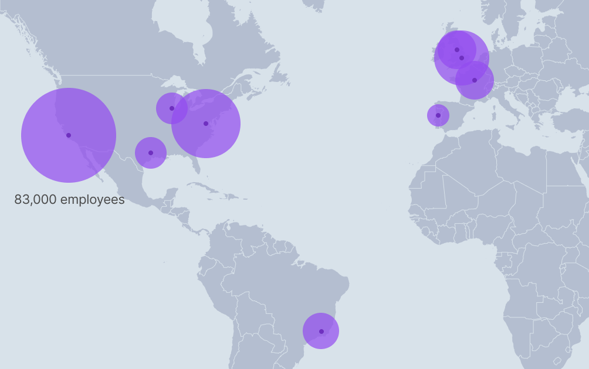
Developing another big bet
I facilitated another team workshop that led to another bet to test. With the peer-reviewed Unmind Index we already had a solution in place to help leaders understand the wellbeing of a whole organisation. What would it look like to focus this on the team level. Could we use AI to generate or link to actionable insights based on team scores?
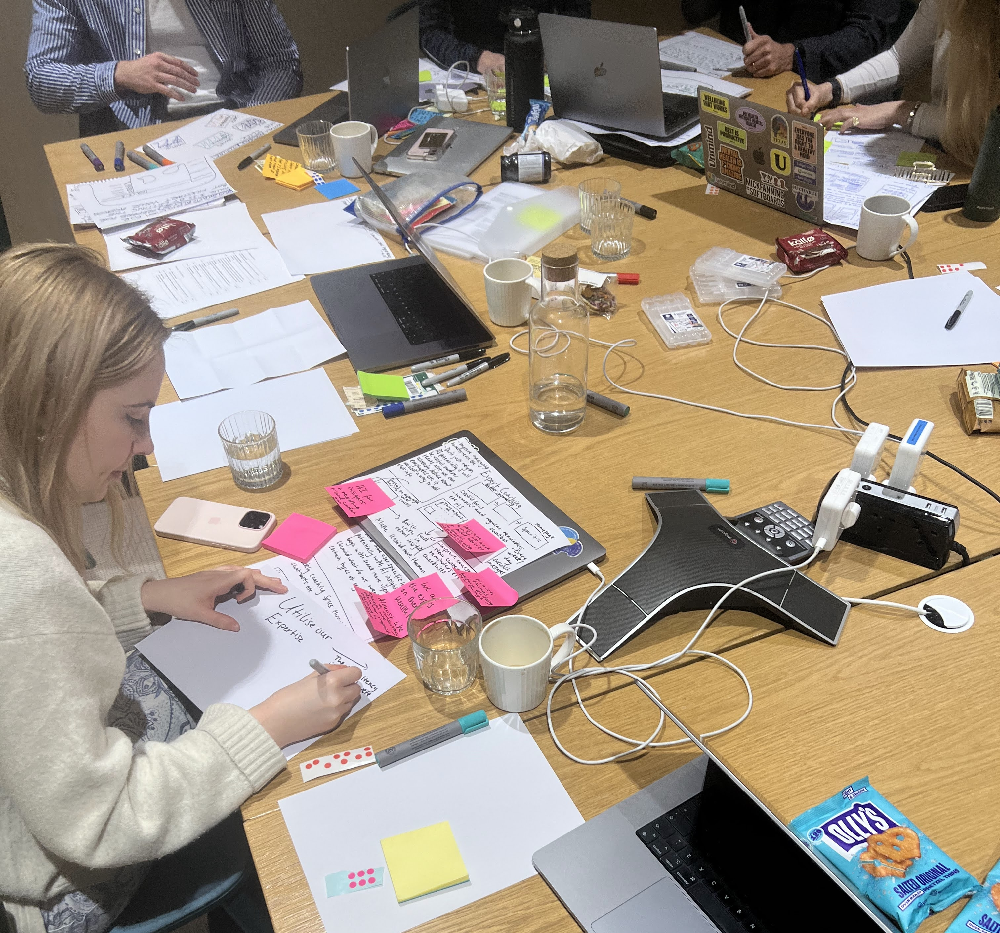
Science team collaboration
Throughout this process I worked closely with the Unmind science team – integrating a new wellness rubric system into the designs, and refining our check-in questions for the survey tool, Unmind Insights. (More on the design process behind Insights here)
Unmind Science Team
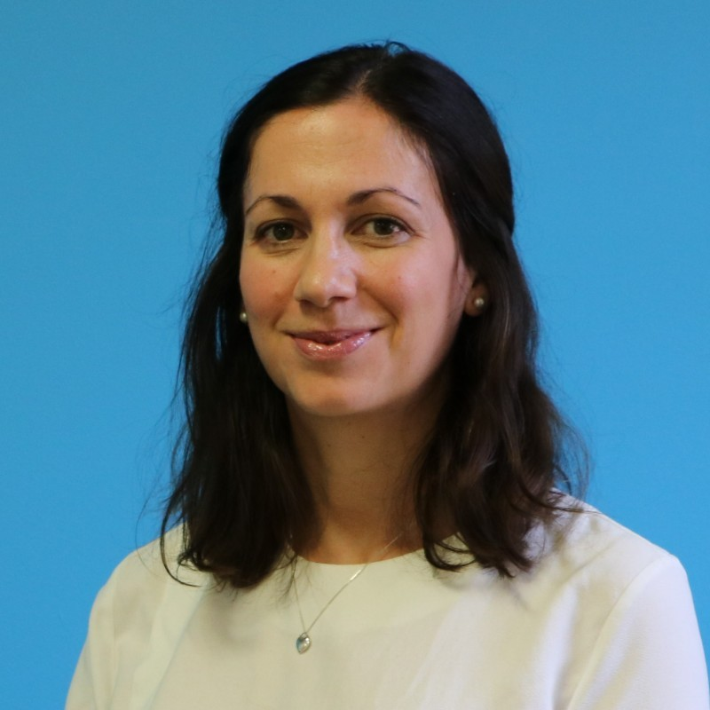
Survey tool
Meanwhile, I worked in parallel on our team survey tool, refining the questions and interface in collaboration with product management, engineering, and our science team.
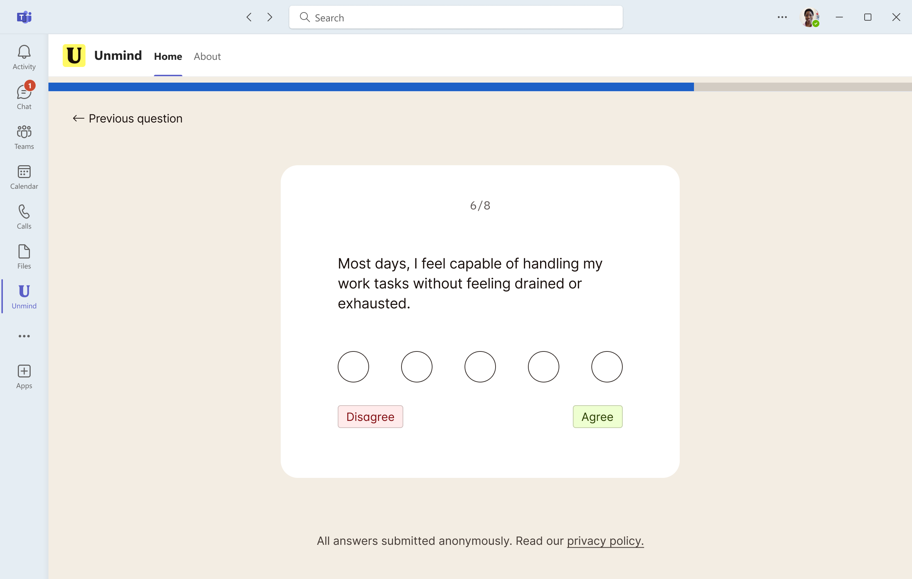
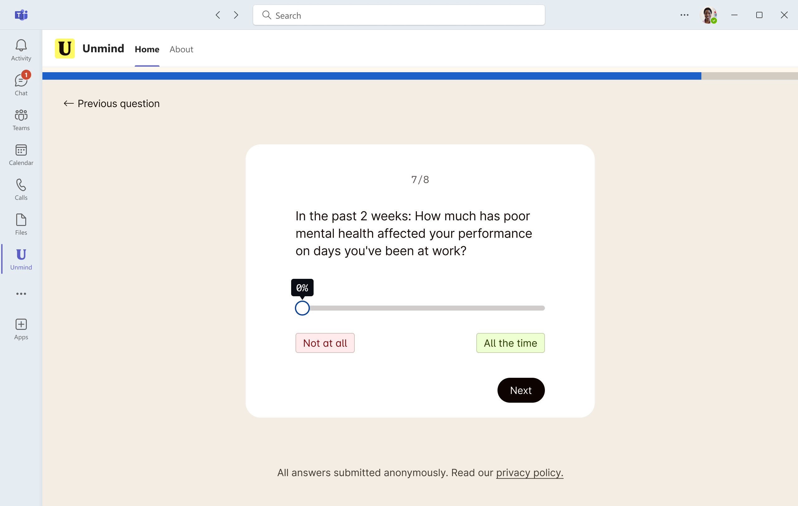
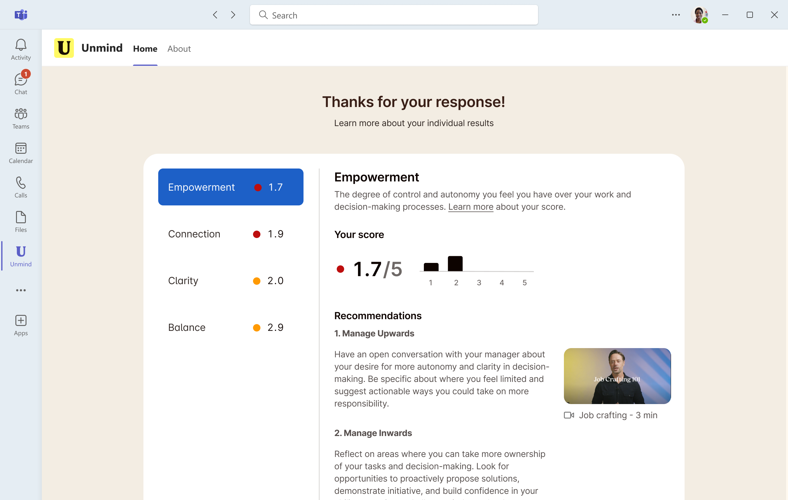
Prototype iteration
Our prototype went through several layout changes as I tested our concepts with clients, maintaining close collaboration with leadership from product, engineering, design, and the science team throughout.
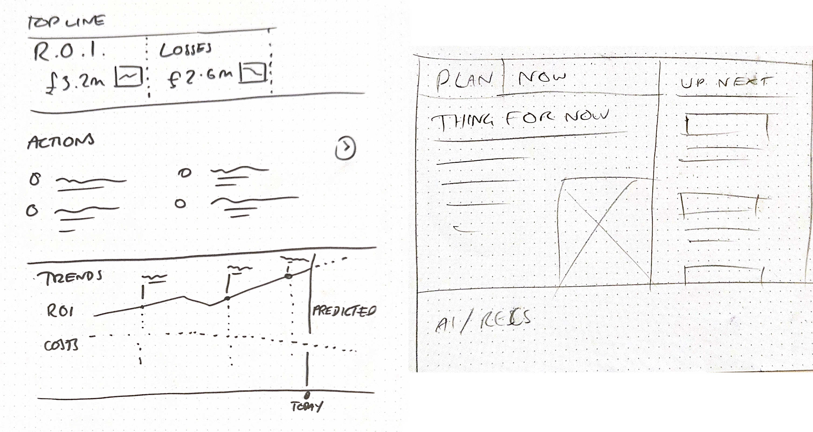
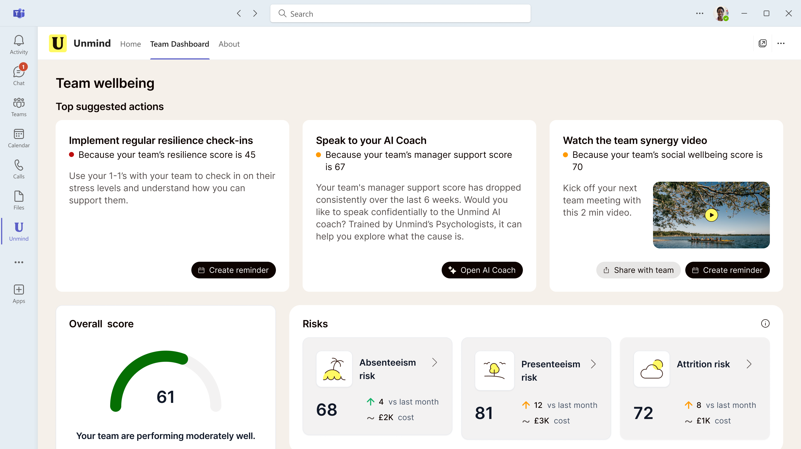
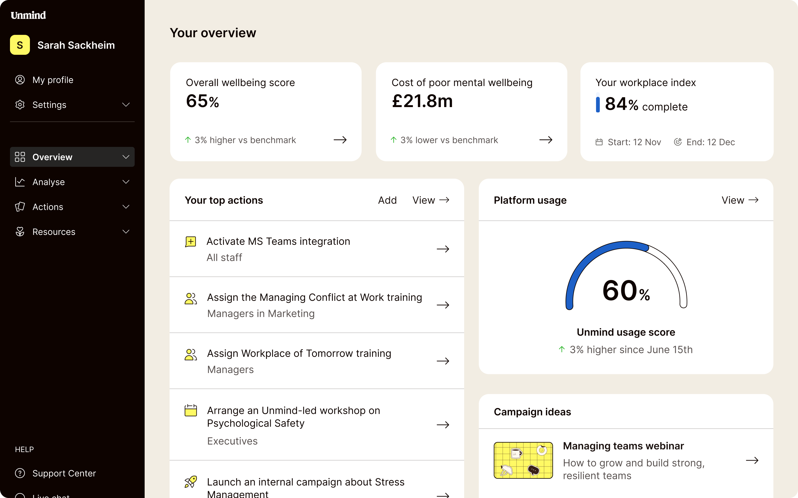
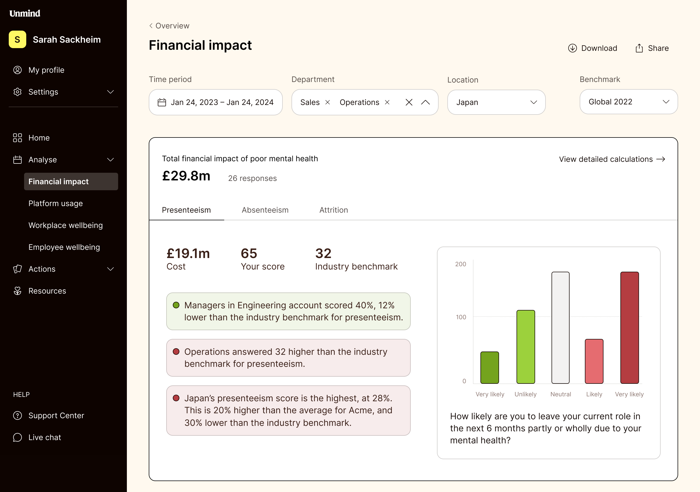
Shipping Compass
As we developed our ideas I worked with engineering on implementation, and design reviews as they began to ship working code. We quickly ran an in-house beta test with Unmind managers and then extended the test to our key clients.
Our resulting tool was a hit with managers. They could now run check-ins easily and get results quickly – all within Microsoft Teams. Our ongoing user research showed that the insights were useful, and the recommendations were inspiring.
Post-launch iteration
Following the launch of Unmind Compass, we didn’t stop. The real work began in the weeks and months that followed — refining, iterating, and scaling the product to deliver even greater impact.
Metrics that matter
The initial release drove strong uptake from managers across key enterprise clients — but we wanted to dig deeper into what was working, where the friction lay, and how we could improve further.
Insights from analytics and interviews revealed that our new dashboard improved things in many areas.
- Managers were returning to Compass regularly, integrating it into their team health routines.
- Time spent in-app increased by 31% – up from 6 to nearly 8 minutes.
- In our interviews, managers reported that the tool felt more personalised and responsive to their results, with satisfaction scores increasing by 24%, up from a baseline of 62%.
- Repeat usage of the team survey tool increased by 12%, rising from a baseline of 45% to 57%.
Iterating on insights
Working with our data team, we identified drop-off points and tested further changes:
- Simplified dashboards layout to reduce cognitive load, resulting in better qualitative feedback and a small nudge in time spent in app.
- Smarter nudges timed around typical manager workflows led to a 13% increase in engagement, with late afternoon notifications seeing the highest response, up from a baseline engagement rate of 28% to 32%.
- A/B tested copy, ‘calls to action’, and insight sequencing — leading to a further 9% increase in time-in-app.
We also collaborated with our science team to refine the recommendation engine. Feedback loops allowed us to surface better, more tailored suggestions, driving an 8% increase in clickthroughs, from a baseline rate of 22% to 30%.
Cross-functional collaboration in action
Core product team
Everything we shipped post-launch was possible thanks to tight collaboration across product, engineering, design, science, and research.
- Weekly design crits and async review flows.
- Monthly playbacks for alignment and feedback.
- User visit tracking via Hotjar to understand behaviour and interaction flows.
Multivariate testing & learnings
To refine our layout and insight delivery, we tested:
- Visual density vs whitespace
- Sentiment-tagged summaries vs plain text
The winning combo? Dense cards with sentiment-tagged summaries — boosting recommendation engagement by 8% and improving clarity in feedback sessions.
Scaling the impact
As Compass scaled to more clients, we refined our onboarding in collaboration with marketing — with interactive walkthroughs and role-specific explainers.
- By refining the user experience, we saw a 27% reduction in support requests, down from a baseline of 36 monthly requests to 26.
- Wider adoption across full departments, not just early champions.
Looking ahead
Our success wasn’t just in numbers — it was cultural. Managers told us Compass helped them feel more confident, informed, and supported in leading their teams. That’s what we set out to do. The real clincher was that we saw a modest uptick in overall scores for teams using the tool, with risk factors dropping 5% on average over just three months, from a baseline of 18% to 13%.
Integrating our AI Wellness Coach
Since Compass was shipped, I worked on some concepts for an AI coach for both managers and employees, based on Unmind’s Nova . The aim of this was to create one easily accessible system capable of quickly giving advice and information on any of the following:
- Compass results (recommendations and understanding scores)
- Company resources (e.g. Employee Assistment Program – EAP)
- Company policies (e.g. time off for poor health, bereavement, etc.)
- Advice on supporting colleagues in poor mental health
- Phone numbers for emergency help.
Our initial results were really promising with this system — we saw repeat visits rise by 21%, from a baseline of 45% to 54%, and time in-app increased by 15%, up from an average of 12 minutes to 13.8 minutes.
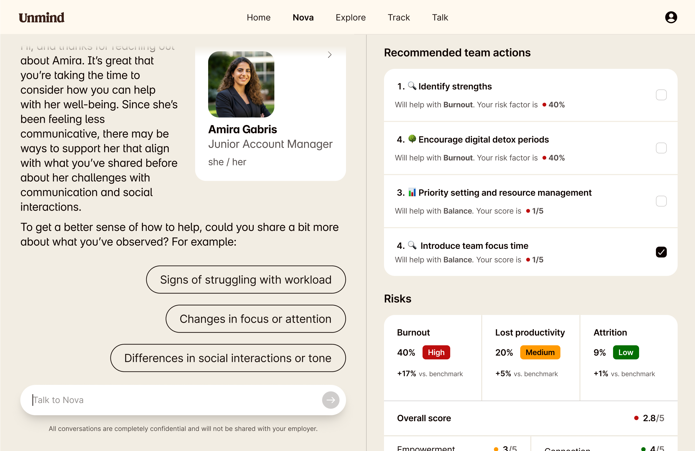
Impact
Compass was a driver in key multi-million dollar deals for Unmind – extending our training support for managers, and enabling team-level wellbeing development and growth. Our AI recommendations and chatbot prototype were both very well received – driving engagement including repeat visits and time spent in app.
Testimonials
Phil Mullan
Chief AI Officer, UnmindAny company looking to innovate, advance user experience, and champion new technologies to create value-driven solutions would be fortunate to have Bill on their team.”